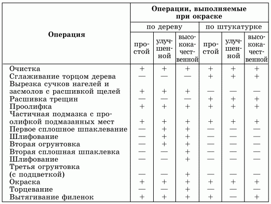

Окраска стен.

Обычно к окраске стен приступают после того, как будут окрашены все потолки. Прежде всего необходимо подготовить стены (конечно, если они не были подготовлены ранее): очистить их от брызг с помощью 10-сантиметровго шпателя, плоскость которого следует располагать под углом 30°.
Следует учесть, что начинать покраску нужно только тогда, когда высохнет слой грунтовки. Не стоит оставлять поверхность стен для подсыхания более чем на сутки.
Отделочниками выполняется простая, улучшенная и высококачественная окраска. В зависимости от чистоты отделки мастеру потребуется то или иное количество времени и средств. Например, при простой окраске масляными красками по дереву нужно будет проделать 6 операций, а при улучшенной – 9 (см. табл. 3).
Таблица 3. Операции по подготовке, обработке и окраске поверхностей различными окрасочными составами
При высококачественной окраске потребуется прове-сти 17 операций, помимо тех действий, которые выполняются при улучшенной покраске, добавляется также второе шпаклевание и шлифование. Обычно высококачественную окраску применяют только профессиональные отделочники, а в домашних условиях считается вполне допустимым провести и простую окраску.
Если вы раньше никогда не держали в руках кисть, скорее всего вам придется нанести и второй слой краски, который поможет сгладить определенные недостатки, дефекты, всегда обнаруживающиеся на стенах. Иногда в этом случае можно пользоваться не валиком, а пылесосом или садовым пульверизатором. Второй слой краски наносят только после того, как предыдущий слой подсохнет.
К тому же при проведении покраски стен может возникнуть вполне закономерный вопрос: а нельзя ли совсем обойтись без кисти, значительно сократив время работы благодаря применению пылесоса? Можно, конечно, если приходится окрашивать стены, скажем, в дачном домике. Но первый слой лучше всего наносить все-таки кистью, и для этого есть две причины. Первая: краска с кисти прекрасно впитывается в поры поверхности, в результате чего прочнее с ней сцепляется. Вторая: при использовании пылесоса понадобится в три раза больше краски, чем при покраске кистью.
Окрашивание клеевыми составамиИтак, если в квартире новые, еще не окрашенные стены, потребуется:
1. Очистить поверхность стен от пыли.
2. Огрунтовать стены.
3. Исправить имеющиеся дефекты с помощью шпаклевки на клеевой основе (рецепт ее приготовления приведен ниже).
4. Просушить стены.
5. Окрасить подготовленные поверхности.
Для приготовления клеевой шпаклевки с грунтовкой (см. пункт 3) потребуется:
– 10 %-ный клеевой раствор – 150 г;
– купоросная или квасцовая грунтовка – 1 кг;
– просеянный мел – до рабочей густоты.
Необходимо смешать купоросную или квасцовую грунтовку с клеевым раствором, а затем замесить мел на полученной смеси до тестообразного состояния.
Если ремонт в квартире делался очень давно, возможно, лет 10–15 назад, то в таком случае нужно провести следующие работы:
1. Очистить поверхность от пыли и грязи.
2. Исправить дефекты стен.
3. Просушить и загрунтовать стены.
4. Окрасить подготовленные поверхности.
Чистые поверхности нужно размыть водой, тщательно растушевывая имеющийся набел (это, конечно же, в том случае, если старый набел прочно держится на стене). Затем следует приготовить жидкий колер и нанести его на слегка подсохшую поверхность. На сухом основании колер не будет держаться.
Для того чтобы получить хорошо окрашенную стену, нужно будет нанести два слоя, причем второй, как уже говорилось, придется наносить только после того, как просохнет первый.
Не следует забывать и о том, что при окраске стен клеевыми красками в комнате во время работы не должно быть сквозняков, в противном случае стена окрасится неравномерно.
Если вы хотите придать поверхности матовую фактуру, нужно провести торцевание с помощью специальной кисти. Краска для торцевания должна быть немного гуще, чем для обычной покраски. Жидкая краска для торцевания будет стекать по поверхности стены в конце работы, а значит, появятся и дополнительные проблемы. Еще раз напомним также, что эту операцию нужно проводить только по свежевыкрашенному слою.
Придать стене матовость можно также и с помощью некоторых специальных добавок в масляную краску: 0,5 %-ного мыльного раствора из хозяйственного мыла и 10 %-ного спирта. Сначала растворяют мыло, нарезанное стружками, в горячей воде, затем к получившемуся раствору добавляют нужное количество уайт-спирита. Наносить этот окрасочный состав следует обычным способом – кистями или валиками.